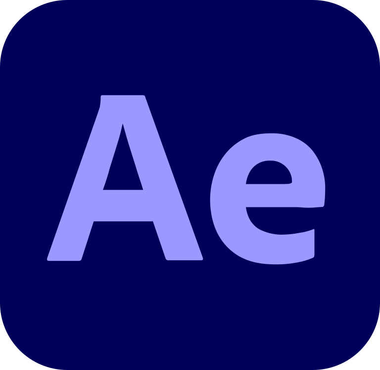
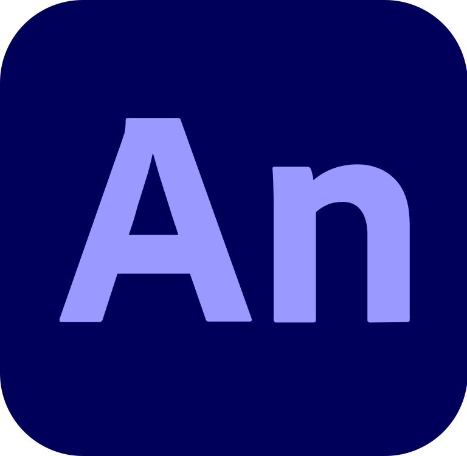
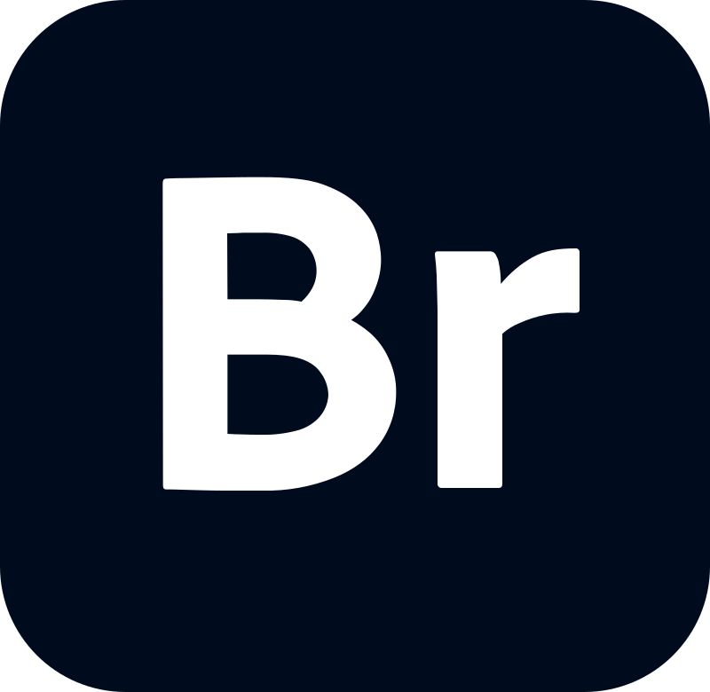

全家桶下载链接 点我下载
部分产品介绍
Adobe Illustrator
Adobe illustrator，简称AI，是一种应用于出版、多媒体和在线图像的工业标准矢量插画的软件。该软件主要应用于印刷出版、海报书籍排版、专业插画、多媒体图像处理和互联网页面的制作等，也可以为线稿提供较高的精度和控制，适合生产任何小型设计到大型的复杂项目。

Adobe XD
Adobe XD是一站式UX/UI设计平台，在这款产品上面用户可以进行移动应用和网页设计与原型制作。同时它也是一款结合设计与建立原型功能，并同时提供工业级性能的跨平台设计产品。设计师使用Adobe XD可以高效准确的完成静态编译或者框架图到交互原型的转变。

After Effects
Adobe After Effects简称“AE”是Adobe公司推出的一款图形视频处理软件，适用于从事设计和视频特技的机构，包括电视台、动画制作公司、个人后期制作工作室以及多媒体工作室。属于层类型后期软件。Adobe After Effects软件可以帮助您高效且精确地创建无数种引人注目的动态图形和震撼人心的视觉效果。利用与其他Adobe软件无与伦比的紧密集成和高度灵活的2D和3D合成，以及数百种预设的效果和动画，为您的电影、视频、DVD和Macromedia Flash作品增添令人耳目一新的效果。
Animate
Animate CC 由原Adobe FlashProfessional CC 更名得来，维持原有 Flash 开发工具支持外新增 HTML 5 创作工具，为网页开发者提供更适应现有网页应用的音频、图片、视频、动画等创作支持。Animate CC将拥有大量的新特性，特别是在继续支持Flash SWF、AIR格式的同时，还会支持HTML5Canvas、WebGL，并能通过可扩展架构去支持包括SVG在内的几乎任何动画格式。
Audition
Adobe Audition（简称Au，原名Cool Edit Pro）是由Adobe公司开发的一个专业音频编辑和混合环境。Audition专为在照相室、广播设备和后期制作设备方面工作的音频和视频专业人员设计，可提供先进的音频混合、编辑、控制和效果处理功能。最多混合 128 个声道，可编辑单个音频文件，创建回路并可使用 45 种以上的数字信号处理效果。Audition 是一个完善的多声道录音室，可提供灵活的工作流程并且使用简便。

Bridge
Adobe Bridge是Adobe公司开发的一个组织工具程序，并作为Adobe Creative Suite 2 (CS2) 的一部分于2005年5月发布，已更新至Adobe Bridge 2022版本。从Bridge中可以查看、搜索、排序、管理和处理图像文件,还可以使用Adobe Bridge 来创建新文件夹、对文件进行重命名、移动和删除操作、编辑元数据、旋转图像以及运行批处理命令, 以及查看有关从数码相机导入的文件和数据的信息。
Dreamweaver
Adobe Dreamweaver，简称“DW”，中文名称 "梦想编织者"，最初为美国Macromedia公司开发，2005年被Adobe公司收购。DW是集网页制作和管理网站于一身的所见即所得网页代码编辑器。利用对HTML、CSS、JavaScript等内容的支持，设计师和程序员可以在几乎任何地方快速制作和进行网站建设。Adobe Dreamweaver使用所见即所得的接口，亦有HTML（标准通用标记语言下的一个应用）编辑的功能，借助经过简化的智能编码引擎，轻松地创建、编码和管理动态网站。访问代码提示，即可快速了解 HTML、CSS 和其他Web标准。使用视觉辅助功能减少错误并提高网站开发速度。
PhotoShop
Adobe Photoshop，简称“PS”，是由Adobe Systems开发和发行的图像处理软件。Photoshop主要处理以像素所构成的数字图像。使用其众多的编修与绘图工具，可以有效地进行图片编辑和创造工作。PS 有很多功能，在图像、图形、文字、视频、出版等各方面都有涉及。

Premiere Pro
Adobe Premiere Pro，简称Pr，是由Adobe公司开发的一款视频编辑软件。常用的版本有CS4、CS5、CS6、CC 2014、CC 2015、CC 2017、CC 2018、CC 2019、CC2020、CC2021、CC2022以及2023版本。Adobe Premiere有较好的兼容性，且可以与Adobe公司推出的其他软件相互协作。这款软件广泛应用于广告制作和电视节目制作中。